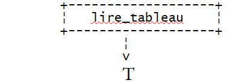
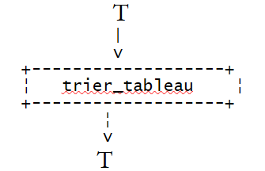
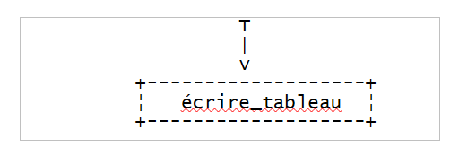
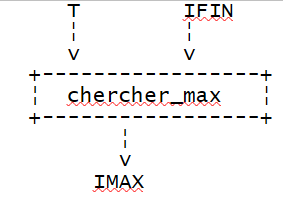
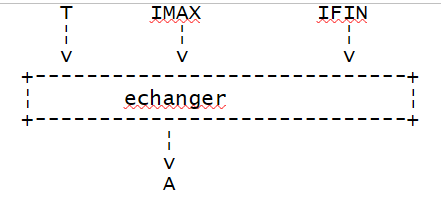
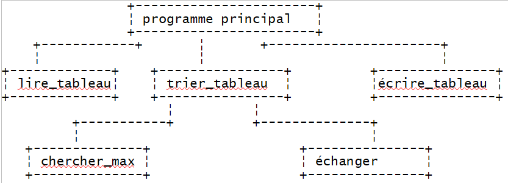
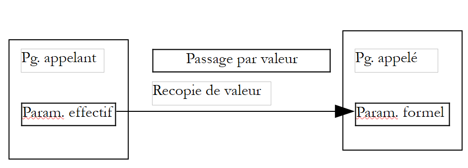
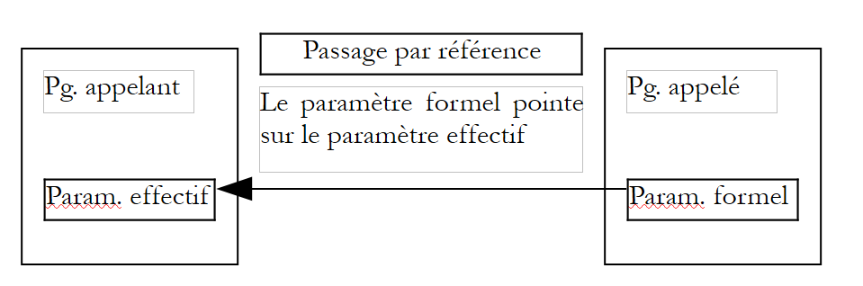

5. Les fonctions et procédures
5.1. Les fonctions prédéfinies de vbscript
La richesse d'un langage dérive en grande partie de sa bibliothèque de fonctions, ces dernières pouvant être encapsulées dans des objets sous le nom de méthodes. Sous cet aspect, on peut considérer que vbscript est plutôt pauvre.
Le tableau suivant définit les fonctions de VBScript hors objets. Nous ne les détaillerons pas. Leur nom est en général une indication de leur rôle. Le lecteur consultera la documentation pour avoir des détails sur une fonction particulière.
Abs | |||
5.2. Programmation modulaire
Décrire la solution programmée d'un problème, c'est décrire la suite d'actions élémentaires exécutables par l'ordinateur et capables de résoudre le problème. Selon les langages ces opérations élémentaires sont plus ou moins sophistiquées. On trouve par exemple:
1 2 3 4 5 6 7 8 9 | |
Décrire un problème complexe peut nécessiter plusieurs milliers de ces instructions élémentaires et plus. Il est alors très difficile pour l'esprit humain d'avoir une vue globale d'un programme. Devant cette difficulté d'appréhender le problème dans sa globalité, on le décompose alors en sous-problèmes plus simples à résoudre. Considérons le problème suivant : Trier une liste de valeurs numériques tapées au clavier et afficher la liste triée à l'écran.
On peut dans un premier temps décrire la solution sous la forme suivante:
On a décomposé le problème en 3 sous-problèmes, plus simples à résoudre. L'écriture algorithmique est souvent plus formalisée que la précédente et l'algorithme s'écrira plutôt:
où T représente un tableau. Les opérations
sont des opérations non élémentaires qui doivent être décrites à leur tour par des opérations élémentaires. Ceci est fait dans ce qu'on appelle des modules. La donnée T est appelée un paramètre du module. C'est une information que le programme appelant passe au module appelé (paramètre d'entrée) ou reçoit du module appelé (paramètre de sortie). Les paramètres d'un module sont donc les informations qui sont échangées entre le programme appelant et le module appelé.
module lire_tableau(T) |  |
module trier_tableau(T) |  |
module écrire_tableau(T) |  |
Le module lire_tableau(T) pourrait être décrit comme suit :
Ici, nous avons suffisamment décrit le module lire_tableau. En effet, les trois actions nécessaires ont une traduction immédiate en vbscript. La dernière nécessitera l'utilisation de la fonction split. Si vbscript n'avait pas cette fonction, l'action 3 devrait être décomposée à son tour en actions élémentaires ayant un équivalent immédiat en vbscript.
Le module écrire_tableau(T) pourrait être décrit comme suit :
Le module écrire_tableau(T) pourrait être décrit comme suit (on suppose que les indices des éléments de T commencent à 0) :
Ici l'algorithme utilise de nouveau des actions non élémentaires:
chercher_max(T, IFIN, IMAX) rend l'indice IMAX de l'élément le plus grand du tableau T dont l'indice du dernier élément est IFIN.
|  |
échanger(T, IMAX, IFIN) échange 2 éléments du tableau T , ceux d'indice IMAX et IFIN.
|  |
Il faut donc décrire les nouvelles opérations non élémentaires.
module chercher_max(A, IFIN, IMAX) | |
module échanger(T IMAX, IFIN) |
Le problème initial a été complètement décrit à l'aide d'opérations élémentaires vbscript et peut donc maintenant faire l'objet d'une traduction dans ce langage. On notera que les actions élémentaires peuvent différer d'un langage à l'autre et que donc l'analyse d'un problème doit à un certain moment tenir compte du langage de programmation utilisé. Un objet qui existe dans un langage peut ne pas exister dans un autre et modifier alors l'algorithme utilisé. Ainsi, si un langage avait une fonction de tri, il serait ici absurde de ne pas l'utiliser.
Le principe appliqué ici, est celui dit de l'analyse descendante. Si on représente l'ossature de la solution, on a la chose suivante :
|  |
On a une structure en arbre.
5.3. Les fonctions et procédures vbscript
Une fois l'analyse modulaire opérée, le programmeur peut traduire les modules de son algorithme en fonctions ou procédures vbscript. Les fonctions et procédures admettent toutes deux des paramètres d'entrée/sortie mais la fonction rend un résultat qui permet son utilisation dans des expressions alors que la procédure n'en rend pas.
5.3.1. Déclaration des fonctions et procédures vbscript
La déclaration d'une procédure vbscript est la suivante
et celle d'une fonction
Pour rendre son résultat, la fonction doit comporter une instruction d'affectation du résultat à une variable portant le nom de la fonction :
1 | |
L'exécution d'une fonction ou procédure s'arrête de deux façons :
- à la rencontre de l'instruction de fin de fonction (end function) ou fin de procédure (end sub)
- à la rencontre de l'instruction de sortie de fonction (exit function) ou de procédure (exit sub) Pour la fonction, on se rappellera que le résultat doit avoir été affecté à une variable portant le nom de la fonction avant que celle-ci ne se termine par un end function ou exit function.
5.3.2. Modes de passage des paramètres d'une fonction ou procédure
Dans la déclaration des paramètres d'entrée-sortie d'une fonction ou procédure, on précise le mode (byRef,byVal) de transmission du paramètre du programme appelant vers le programme appelé :
Lorsque le mode de transmission byRef ou byVal n'est pas précisé, c'est le mode byRef qui est utilisé.
Paramètres effectifs, paramètres formels
Soit une fonction vbscript définie par
Les paramètres parmamFormi utilisés dans la définition de la fonction ou de la procédure sont appelés paramètres formels. La fonction précédente pourra être utilisée à partir du programme principal ou d'un autre module par une instruction du genre :
Les paramètres parmamEffi utilisés dans l'appel à la fonction ou la procédure sont appelés paramètres effectifs. Lorsque l'exécution de la fonction nomFonction commence, les paramètres formels reçoivent les valeurs des paramètres effectifs correspondants. Les mots clés byRef et byVal fixent le mode de transmission de ces valeurs.
Mode de transmission par valeur (byVal)
Lorsqu'un paramètre formel précise ce mode de transmission, le paramètre formel et le paramètre effectif sont alors deux variables différentes. La valeur du paramètre effectif est copiée dans le paramètre formel avant exécution de la fonction ou procédure. Si celle-ci modifie la valeur du paramètre formel au cours de son exécution, cela ne modifie en rien la valeur du paramètre effectif correspondant. Ce mode de transmission convient bien aux paramètres d'entrée de la fonction ou procédure.
|  |
Mode de transmission par référence (byRef)
Ce mode de transmission est le mode par défaut si aucun mode de transmission du paramètre n'est indiqué. Lorsqu'un paramètre formel précise ce mode de transmission, le paramètre formel et le paramètre effectif correspondant sont une seule et même variable. Ainsi si la fonction modifie le paramètre formel, le paramètre effectif est également modifié. Ce mode de transmission convient bien :
- aux paramètres de sortie car la valeur de ceux-ci doivt être transmise au programme appelant
- aux paramètres d'entrée coûteux à recopier tels les tableaux
|  |
Le programme suivant montre des exemples de passage de paramètres :
Commentaires
- Dans un script vbscript, il n'y a pas de place particulière pour les fonctions et les procédures. Elles peuvent être n'importe où dans le texte source. En général, on les regroupe soit au début soit à la fin et on fait en sorte que le programme principal constitue un bloc continu.
5.3.3. Syntaxe d'appel des fonctions et procédures
Soit une procédure p admettant des paramètres formels pf1, pf2, ...
- l'appel à la procédure p se fait sous la forme
sans parenthèses autour des paramètres
-
si la procédure p n'admet aucun paramètre, on peut indifféremment utiliser l'appel p ou p() et la déclaration sub p ou sub p() Soit une fonction f admettant des paramètres formels pf1, pf2, ...
-
l'appel à la fonction f se fait sous la forme
les parenthèses autour des paramètres sont obligatoires. Si la fonction f n'admet aucun paramètre, on peut indifféremment utiliser l'appel f ou f() et la déclaration function f ou function f().
-
le résultat de la fonction f peut être ignoré par le programme appelant. La fonction f est alors considérée comme une procédure et suit les règles d'appel des procédures. On écrit alors f pe1, pe2, ... (sans parenthèses) pour appeler la fonction f. Si la fonction ou procédure est une méthode d'objet, il semblerait que les règles soient quelque peu différentes et non homogènes.
-
ainsi on peut écrire MyFile.WriteLine "Ceci est un test." ou MyFile.WriteLine("Ceci est un test.")
-
mais si on peut écrire wscript.echo 4, on ne peut pas écrire wscript.echo(4). On s'en tiendra aux règles suivantes :
-
pas de parenthèses autour des paramètres d'une procédure ou d'une fonction utilisée comme une procédure
- parenthèses autour des paramètres d'une fonction
5.3.4. Quelques exemples de fonctions
On trouvera ci-dessous quelques exemples de définitions et utilisations de fonctions :
Programme | ||
| ||
Résultats | ||
Commentaires
- la fonction rendUnTableau montre qu'une fonction peut rendre plusieurs résultats et non un seul. Il suffit qu'elle les place dans un variant tableau et qu'elle rende ce variant comme résultat.
- inversement la fonction argumentsVariables montre qu'on peut écrire une fonction qui admet un nombre variable d'arguments. Il suffit là également de les mettre dans un variant tableau et de faire de ce variant un paramètre de la fonction.
5.3.5. Paramètre de sortie ou résultat d'une fonction
Supposons que l'analyse d'une application ait montré la nécessité d'un module M avec des paramètres d'entrée Ei et des paramètres de sortie Sj. Rappelons que les paramètres d'entrée sont des informations que le programme appelant donne au programme appelé et qu'inversement les paramètres de sortie sont des informations que le programme appelé donne au programme appelant. On a en vbscript plusieurs solutions pour les paramètres de sortie :
- s'il n'y a qu'un seul paramètre de sortie, on peut en faire le résultat d'une fonction. Il n'y a alors plus de paramètre de sortie mais simplement un résultat de fonction.
- s'il y a n paramètres de sortie, l'un d'entre-eux peut servir de résultat de fonction , les n-1 autres restant des paramètres de sortie. On peut aussi ne pas utiliser de fonction mais une procédure à n paramètres de sortie. On peut également utiliser une fonction qui rendra un tableau dans lequel on aura placé les n valeurs à rendre au programme appelant. On se rappellera que le programme appelé rend ses résultats au programme appelant par recopie de valeurs. Cette recopie est évitée dans le cas de paramètres de sortie passés par référence. Il y a donc dans cette dernière solution un gain de temps.
5.4. Le programme Vbscript de tri de valeurs
Nous avions commencé la discussion sur la programmation modulaire par l'étude algorithmique d'un tri de valeurs numériques tapées au clavier. Voici la traduction VBScript qui pourrait en être faite :
Programme | ||
| ||
Résultats | ||
Commentaires :
- le module échanger qui avait été identifié dans l'algorithme initial n'a pas fait ici l'objet d'un module en vbscript parce que jugé trop simple pour faire l'objet d'un module particulier.
5.5. Le programme IMPOTS sous forme modulaire
Nous reprenons le programme de calcul de l'impôt écrit cette fois sous forme modulaire
Programme | ||
|
Commentaires
- la fonction getArguments permet de récupérer les informations (marie, enfants, salaire) du contribuable. Ici, elles sont passées en arguments au programme vbscript. Si cela devait changer, par exemple si ces arguments venaient d'une interface graphique, seule la procédure getArguments devrait être réécrite et pas les autres.
- la fonction getArguments peut détecter des erreurs sur les arguments. Lorsque ceci se produit, on aurait pu décider d'arrêter l'exécution du programme dans la fonction getArguments par une instruction wscript.quit. Ceci ne doit jamais être fait dans une fonction ou procédure. Si une fonction ou procédure détecte une erreur, elle doit le signaler d'une façon ou d'une autre au programme appelant. C'est à lui de prendre la décision d'arrêter l'exécution ou non, pas à la procédure. Dans notre exemple, le programme appelant pourrait décider de redemander à l'utilisateur de retaper la donnée erronée au clavier plutôt que d'arrêter l'exécution.
- ici, la fonction getArguments rend un variant tableau où le 1er élément est un code d'erreur (0 si pas d'erreur) et le second un message d'erreur si il y a eu erreur. En testant le résultat obtenu, le programme appelant peut savoir s'il y a eu erreur ou non.
- la procédure getData permet d'obtenir les données nécessaires au calcul de l'impôt. Ici elles sont directement définies dans la procédure getData. Si ces données devaient provenir d'une autre source, d'un fichier ou d'une base de données par exemple, seule la procédure getData devrait être réécrite et pas les autres.
- la fonction calculerImpot permet de calculer l'impôt une fois que toutes les données ont été obtenues quelque soit la façon dont elles ont été obtenues.
- on notera donc qu'une écriture modulaire permet une (ré)utilisation de certains modules dans différents contextes. Ce concept a été dans les vingt dernières années fortement développé dans le concept d'objet.